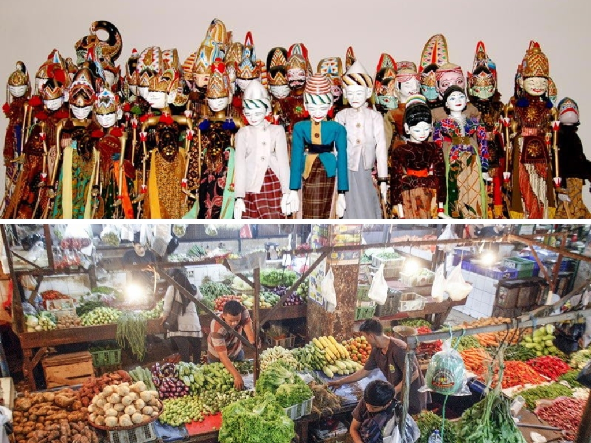
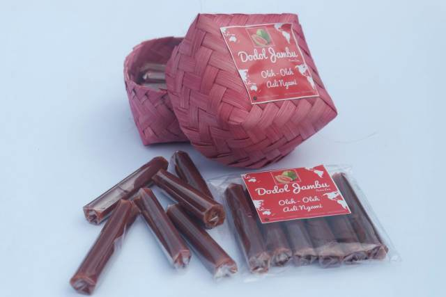
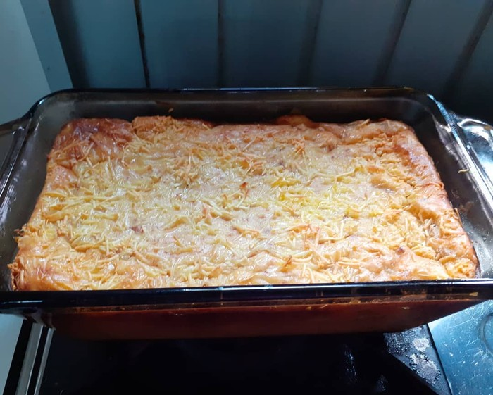

Sekilas Tentang Kota Depok
Kota Depok, yang terletak di Provinsi Jawa Barat, Indonesia, adalah sebuah kota yang begitu menarik dengan keberagaman budaya, hidangan lezat, tempat-tempat ikonik, dan sejumlah keunikan yang menggoda pengunjung untuk menjelajahinya lebih dalam. Mari kita terus melihat lebih jauh tentang pesona Kota Depok. Beberapa aspek budaya yang patut diperhatikan di Kota Depok adalah:
- Kota Depok adalah tempat di mana seni pertunjukan tradisional berkembang pesat. Wayang golek, dengan boneka kayu yang hidup di atas panggung, dan lenong, yang menggabungkan seni teater dan musik, sering menghibur warga dan pengunjung di berbagai festival dan acara budaya.
- Di tengah modernisasi, pasar tradisional seperti Pasar Depok Lama tetap menjadi pusat kegiatan sehari-hari. Pengunjung dapat merasakan atmosfer yang autentik dan berbelanja berbagai barang antik serta menikmati makanan tradisional yang lezat.
Kota Depok adalah ladang budaya yang subur, dan warganya dengan bangga menjaga warisan budaya mereka.
Makanan
Makanan Khas Kota Depok

Dodol Jambu
Dodol yang menggunakan bahan jambu merah atau jambu biji.

Perkedel Bakar
Perkedel yang dibakar atau dipanggang.Nastar Belimbing
Kue nastar yang berisikan selai belimbing.Peyek Gale
Peyek Gale ini punya rasa gurih dengan varian rasa atau topping.Lokasi
Lokasi Kota Depok